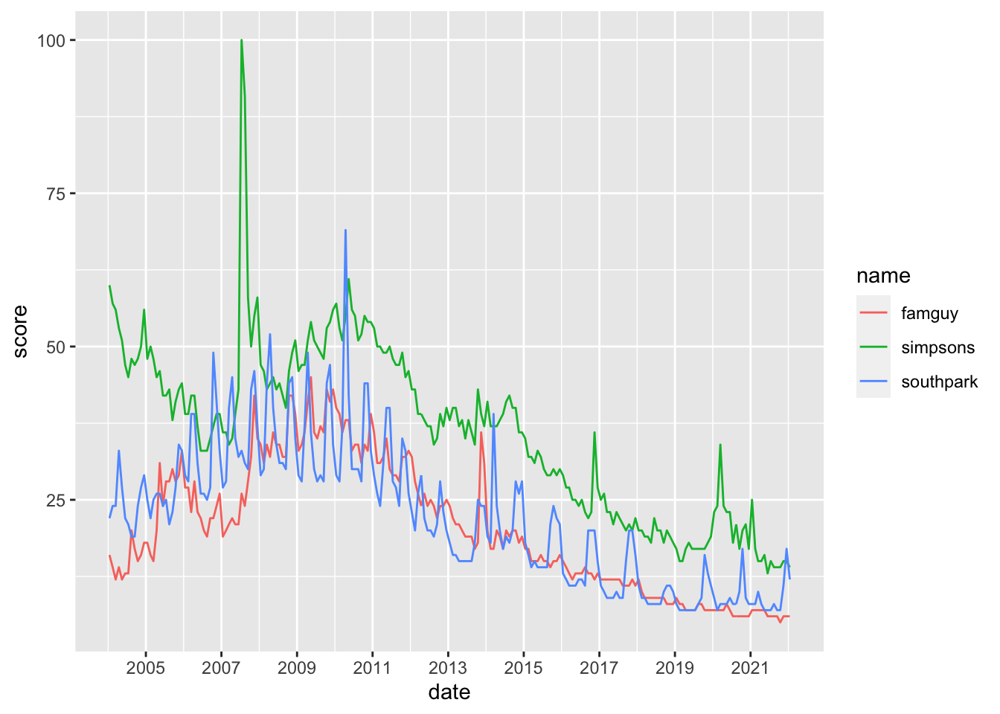
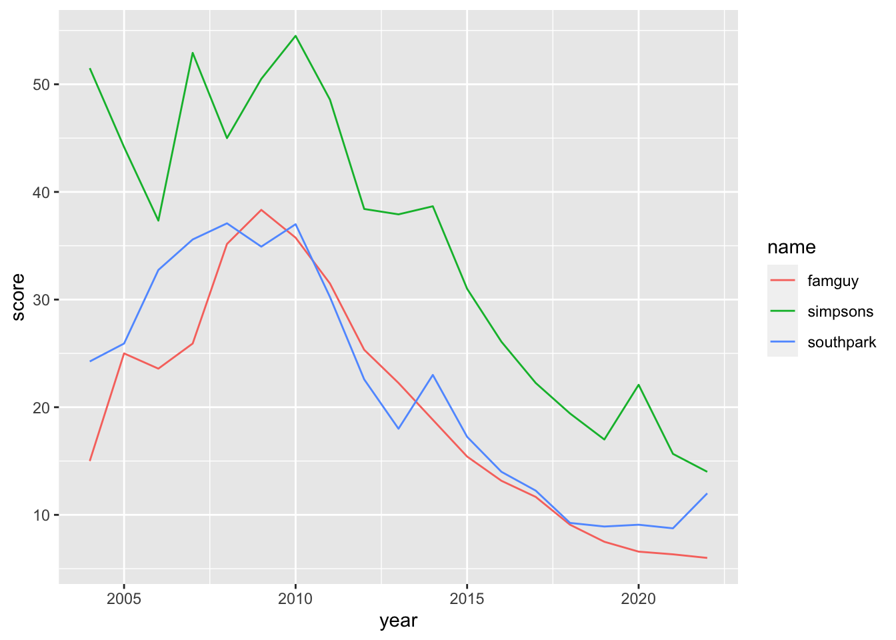
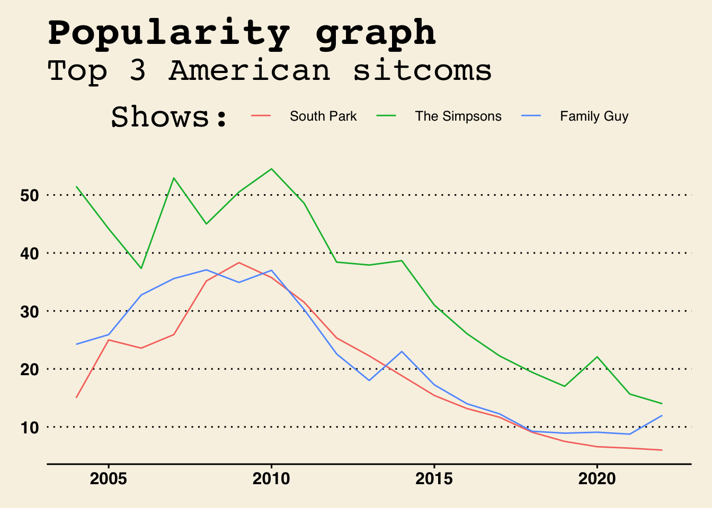
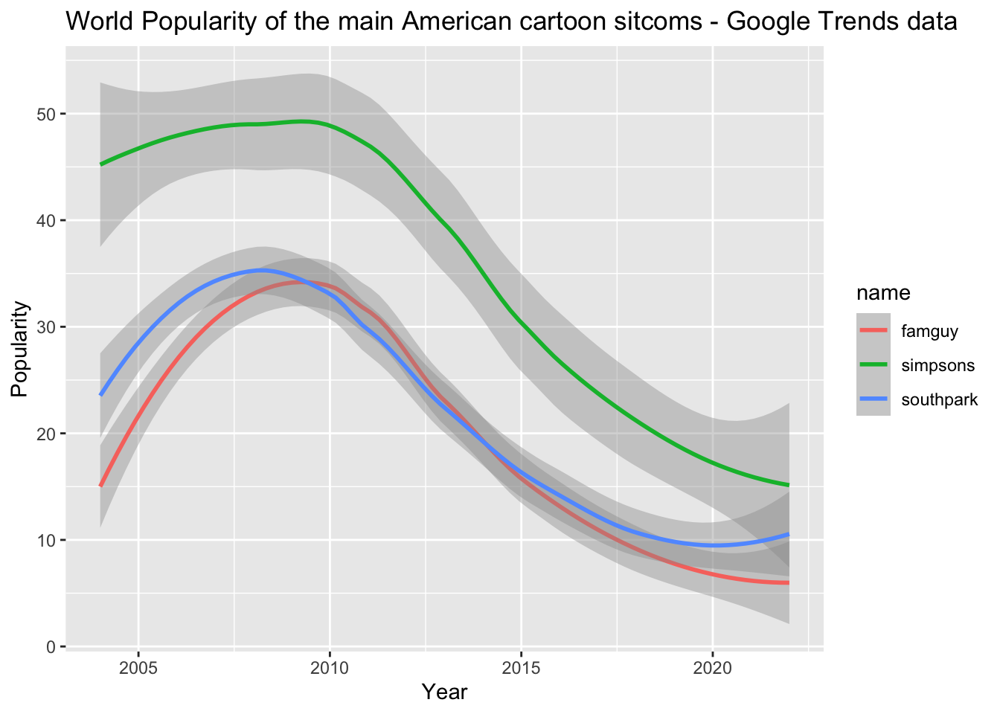
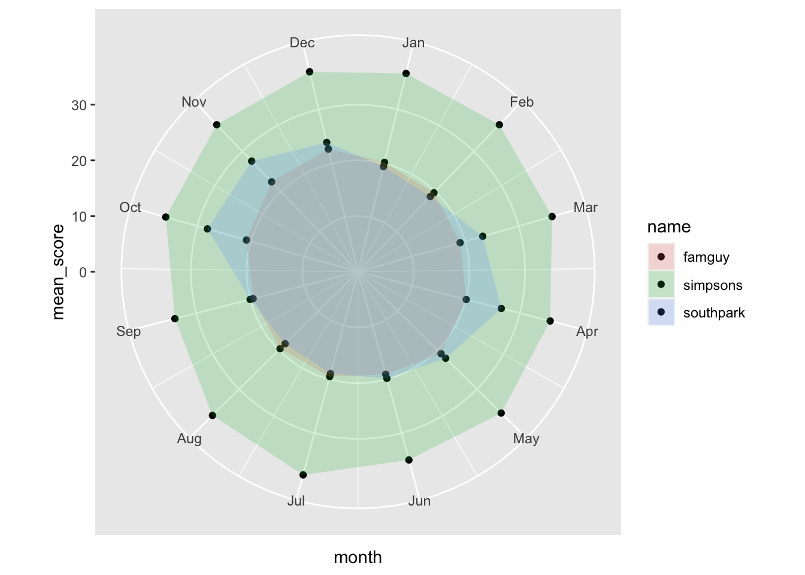
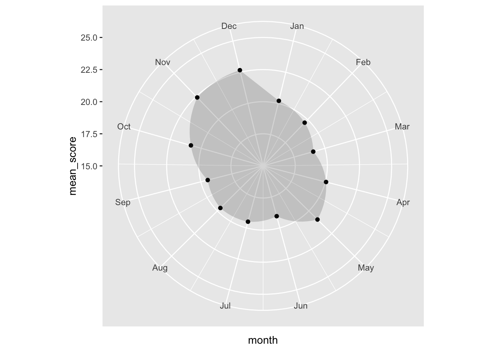

HW3-Google-Trends-Data-Analysis-of-the-most-popular-American-animated-sitcoms
Let's continue working with the Google Trends data you obtained for Homework 02. Homework 3 starts from the line 180 and onward.
library(tidyverse)## ── Attaching packages ─────────────────────────────────────── tidyverse 1.3.1 ──## ✓ ggplot2 3.3.5 ✓ purrr 0.3.4
## ✓ tibble 3.1.6 ✓ dplyr 1.0.7
## ✓ tidyr 1.1.4 ✓ stringr 1.4.0
## ✓ readr 2.0.1 ✓ forcats 0.5.1## ── Conflicts ────────────────────────────────────────── tidyverse_conflicts() ──
## x dplyr::filter() masks stats::filter()
## x dplyr::lag() masks stats::lag()library(readr)
library(readxl)
library(lubridate)##
## Attaching package: 'lubridate'## The following objects are masked from 'package:base':
##
## date, intersect, setdiff, unionlibrary(broom)
library(ggthemes)
library(ggsci)Code to load the data into R and prepare it for the analysis. You need to correctly specify data types and choose concise variable names.#Import data for the US uscoms <- read_csv("uscoms.csv", skip = 1)## Rows: 217 Columns: 4## ── Column specification ──────────────────────────────────────────────────────── ## Delimiter: "," ## chr (1): Month ## dbl (3): Family Guy: (United States), South Park: (United States), The Simps...## ## ℹ Use `spec()` to retrieve the full column specification for this data. ## ℹ Specify the column types or set `show_col_types = FALSE` to quiet this message.#Import data for the world worldcoms <- read_csv("worldcoms.csv", skip = 1)## Rows: 217 Columns: 4## ── Column specification ──────────────────────────────────────────────────────── ## Delimiter: "," ## chr (1): Month ## dbl (3): Family Guy: (Worldwide), South Park: (Worldwide), The Simpsons: (Wo...## ## ℹ Use `spec()` to retrieve the full column specification for this data. ## ℹ Specify the column types or set `show_col_types = FALSE` to quiet this message.#Import data for Cyprus cycoms <- read_csv("cycoms.csv", skip = 1)## Rows: 217 Columns: 4## ── Column specification ──────────────────────────────────────────────────────── ## Delimiter: "," ## chr (1): Month ## dbl (3): Family Guy: (Cyprus), South Park: (Cyprus), The Simpsons: (Cyprus)## ## ℹ Use `spec()` to retrieve the full column specification for this data. ## ℹ Specify the column types or set `show_col_types = FALSE` to quiet this message.prepare the data for analysis
#NOW WE CLEAN AND PREPARE THE DATA FOR ANALYSIS #Clean for the US. uscoms_clean <- uscoms %>% rename(month = Month, famguy = `Family Guy: (United States)`, southpark = `South Park: (United States)`, simpsons = `The Simpsons: (United States)`) %>% mutate_if(is.character, str_replace, pattern = "<", replacement = "") %>% mutate_at(c("famguy", "southpark", "simpsons"), as.numeric) %>% separate(month, into = c("year", "month"), sep = "-", convert = TRUE) %>% mutate(day = 15, .after = month) %>% mutate(date = ymd(paste(year, month, day, sep="-"))) #Clean for Worldwide worldcoms_clean <- worldcoms %>% rename(month = Month, famguy = `Family Guy: (Worldwide)`, southpark = `South Park: (Worldwide)`, simpsons = `The Simpsons: (Worldwide)`) %>% mutate_if(is.character, str_replace, pattern = "<", replacement = "") %>% mutate_at(c("famguy", "southpark", "simpsons"), as.numeric) %>% separate(month, into = c("year", "month"), sep = "-", convert = TRUE) %>% mutate(day = 15, .after = month) %>% mutate(date = ymd(paste(year, month, day, sep="-"))) #Clean for Cyprus. cycoms_clean <- cycoms %>% rename(month = Month, famguy = `Family Guy: (Cyprus)`, southpark = `South Park: (Cyprus)`, simpsons = `The Simpsons: (Cyprus)`) %>% mutate_if(is.character, str_replace, pattern = "<", replacement = "") %>% mutate_at(c("famguy", "southpark", "simpsons"), as.numeric) %>% #I separate the month and year into two columns. Then I convert the character column to a number. separate(month, into = c("year", "month"), sep = "-", convert = TRUE) %>% #I create a new column that is called day, and I use 15 as it is the middle of the month. mutate(day = 15, .after = month) %>% #Here I create a date column using the ymd (=year month day)function. mutate(date = ymd(paste(year, month, day, sep="-")))Code that will calculate the average popularity of the terms by year for each of the search terms in each of the geographies.#HERE WE SUMMARIZE THE AVERAGE POPULARITY OF THE TERMS BY YEAR OF EACH SEARCH #Summarize for the US uscoms_summary <- uscoms_clean %>% group_by(year) %>% summarize_at(c("famguy", "southpark", "simpsons"), mean) #Summarize for Worldwide worldcoms_summary <- worldcoms_clean %>% group_by(year) %>% summarize_at(c("famguy", "southpark", "simpsons"), mean) #Summarize for Cyprus cycoms_summary <- cycoms_clean %>% group_by(year) %>% summarize_at(c("famguy", "southpark", "simpsons"), mean)
Before we analyse the data, we tidy them. This way, we have three rows that correspond for each month from 2004 until 2021. This makes easier for us to specify what goes where.
uscoms_tidy <- uscoms_clean %>%
pivot_longer(cols = c("famguy", "southpark", "simpsons"),
names_to = "name",
values_to = "score")
worldcoms_tidy <- worldcoms_clean %>%
pivot_longer(cols = c("famguy", "southpark", "simpsons"),
names_to = "name",
values_to = "score")
cycoms_tidy <- cycoms_clean %>%
pivot_longer(cols = c("famguy", "southpark", "simpsons"),
names_to = "name",
values_to = "score")4. Analyze the data to answer the following questions:
In what year was each term most popular? In which geography is each of the terms most popular in the year you found in Part A?uscoms_tidy %>% ggplot(aes(x = date, y = score, color = name)) + geom_line() + scale_x_date(date_breaks = "2 year", date_labels = "%Y")
worldcoms_tidy %>% ggplot(aes(x = date, y = score, color = name)) + geom_line()+ scale_x_date(date_breaks = "2 year", date_labels = "%Y")
cycoms_tidy %>% ggplot(aes(x = date, y = score, color = name)) + geom_line() + scale_x_date(date_breaks = "2 year", date_labels = "%Y")
Based on the graphs the most popular year for
–Family guy was: 2nd half of 2008 (USA)/ 1st half of 2009(Worldwide)/ 1st, 2nd half of 2007 (Cyprus)
–Simpsons was: mid-2007 (USA,Worldwide)/ 2nd half of 2008 (Cyprus)
–South Park was: 1st half of 2010 (USA, Worldwide) / first half of 2004 (Cyprus)
Calculate the ratio of the most popular term to the least popular term. Describe how this ratio changed over time in each of the geographies by relying on yearly data.
#I hereby summarize in three different ways the mean search score of each series.
worldcoms_clean %>% summarize(mean(southpark), mean(simpsons), mean(famguy))worldcoms_clean %>% summarize_at(vars(southpark, simpsons, famguy), mean)summary(worldcoms_clean)## year month day famguy southpark
## Min. :2004 Min. : 1.000 Min. :15 Min. : 5.00 Min. : 7.00
## 1st Qu.:2008 1st Qu.: 3.000 1st Qu.:15 1st Qu.:12.00 1st Qu.:11.00
## Median :2013 Median : 6.000 Median :15 Median :19.00 Median :21.00
## Mean :2013 Mean : 6.475 Mean :15 Mean :20.29 Mean :22.22
## 3rd Qu.:2017 3rd Qu.: 9.000 3rd Qu.:15 3rd Qu.:29.00 3rd Qu.:29.00
## Max. :2022 Max. :12.000 Max. :15 Max. :45.00 Max. :69.00
## simpsons date
## Min. : 13.00 Min. :2004-01-15
## 1st Qu.: 23.00 1st Qu.:2008-07-15
## Median : 37.00 Median :2013-01-15
## Mean : 36.18 Mean :2013-01-13
## 3rd Qu.: 47.00 3rd Qu.:2017-07-15
## Max. :100.00 Max. :2022-01-15#Looking at the results we conclude that the simpsons on average was the most popular by far with 36.18 score. Then southpark follows with 22.22 and then family guy follows with 20.29.Then we group the averages by year so we can compare the yearly differences.
world_summary <- worldcoms_clean %>%
group_by(year) %>%
summarize_at(c("famguy", "southpark", "simpsons"), mean)
world_tidy <- world_summary %>%
pivot_longer(cols = c("famguy", "southpark", "simpsons"),
names_to = "name",
values_to = "score")
world_tidy %>%
ggplot(aes(x = year, y = score, color = name)) +
geom_line() 
HOMEWORK 3 STARTS HERE
Prepare the graph showing the trends in popularity of the search terms over time. Make sure to add a descriptive title, label the axes, and modify the look of the graph to be presentable. You can choose your own colors or use one of the palettes we talked about in class. Add a one-sentence explanation for the geometry you selected for the graph.world_tidy %>% ggplot(aes(x = year, y = score, color = name)) + geom_line() + labs(x = "Year", y = "Popularity", title = "World Popularity of the main American cartoon sitcoms - Google Trends data") + scale_color_discrete(labels = c("Family Guy", "The Simpsons", "South Park")) #rename titles
The same code as before is used to make the graph. The only change here is that we rename the names of the shows in the graph by using the command “scale_color_discrete(labels = c(…)”.
world_tidy %>%
ggplot(aes(x = year, y = score, color = name)) +
geom_line() +
labs(x = "Year",
y = "Popularity",
title = "Popularity graph",
subtitle = "Top 3 American sitcoms"
) +
scale_color_discrete(name = "Shows:",
labels = c("South Park", "The Simpsons", "Family Guy")) +
theme_wsj() #this theme makes the graph more presentable
This is a more presentable version of the graph above.
Smooth the data (using a graph) to eliminate random noise. Explain which smoothing method you chose and why.
world_tidy %>%
ggplot(aes(x = year, y = score, color = name)) +
#geom_line() + #I remove this so we can see the variability of each sitcom.
geom_smooth(method = "loess") + #This command creates a moving average that smoothes out all the fluctuations.
labs(x = "Year",
y = "Popularity",
title = "World Popularity of the main American cartoon sitcoms - Google Trends data")## `geom_smooth()` using formula 'y ~ x'
For this code we use LOESS command to smooth the fluctuations. LOESS (aka locally weighted smoothing), helps us see the relationship between the three variables and foresee trends. A LOESS smoother takes the data, fits a regression with the subset of data, and uses that linear regression model to get a point for the smoothed curve. The points closer to the fitted line are more impact-full.
Create a chart to show seasonality by month in your data. What does the chart tell you about the seasonality of your chosen search terms? Some examples of seasonality charts can be found here: https://www.r-graph-gallery.com/142-basic-radar-chart.html (Links to an external site.)
worldcoms_tidy %>%
group_by(month, name) %>% #I group by month to see which season are popular. By name to see the shows.
summarize(mean_score = mean(score)) %>%
ggplot(aes(x = month, y = mean_score, fill = name)) +
geom_col(position = "dodge", alpha = 0) +
geom_point() +
geom_polygon(alpha = 0.2) +
scale_x_continuous(breaks = 1:12, labels = month.abb[1:12]) +
coord_polar()## `summarise()` has grouped output by 'month'. You can override using the `.groups` argument.
As we can see, the Simpsons seasonality graph looks the same. That is probably we have no limits to the popularity score of the variable and every score is close to each other. i.e. popularity does not vary by a lot.
worldcoms_tidy %>%
filter(name == "simpsons") %>% #I filter by name "simpsons" so I can examine the Simpsons show by itself.
group_by(month) %>% #I group by month again to see which month is more popular.
summarize(mean_score = mean(score)) %>%
ggplot(aes(x = month, y = mean_score)) +
geom_col(position = "dodge", alpha = 0) +
geom_point() +
geom_polygon(alpha = 0.2) +
scale_x_continuous(breaks = 1:12, labels = month.abb[1:12]) +
scale_y_continuous(limits = c(30, 40)) + #I include score limits from 30 to 40 in order to see the exact seasons where "The simpsons" peaked and scored low in popularity.
coord_polar()## Warning: Removed 12 rows containing missing values (geom_col).
worldcoms_tidy %>%
filter(name == "famguy") %>% #I filter by name "famguy" so I can examine the "Family Guy" show by itself.
group_by(month) %>% #I group by month again to see which month is more popular.
summarize(mean_score = mean(score)) %>%
ggplot(aes(x = month, y = mean_score)) +
geom_col(position = "dodge", alpha = 0) +
geom_point() +
geom_polygon(alpha = 0.2) +
scale_x_continuous(breaks = 1:12, labels = month.abb[1:12]) +
scale_y_continuous(limits = c(15, 25)) + #I include score limits from 15 to 25 in order to see the exact seasons where "The Family Guy" peaked and scored low in popularity.
coord_polar()## Warning: Removed 12 rows containing missing values (geom_col).
Submit the homework as an .html file rendered from your .rmd, as well as the .rmd file itself.